Радио на каждый день.
Вам надоело слушать бесконечную рекламу бытовой техники по радио? Представим вам радио "Новый шансон" - станцию, которая была сделана специально для Доброграда.

Вам надоело слушать бесконечную рекламу бытовой техники по радио? Представим вам радио "Новый шансон" - станцию, которая была сделана специально для Доброграда.